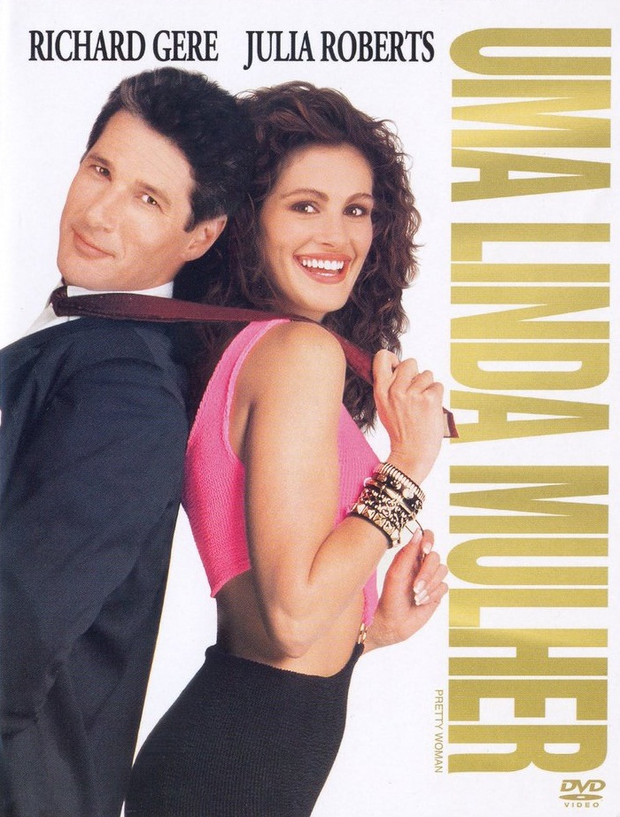
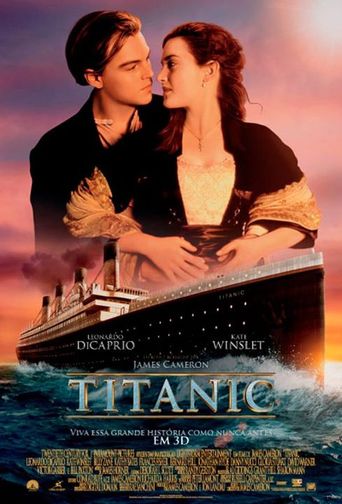
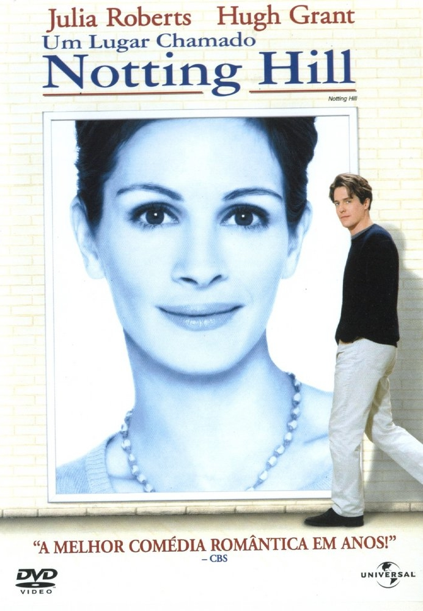

Sucessos de Bilheteria
Uma Linda Mulher
Durante uma viagem de negócios a Los Angeles, Edward, um executivo que compra e fragmenta empresas para vendê-las, encontra a prostituta Vivian. Edward a contrata para ficar com ele durante uma semana a fim de acompanhá-lo nos jantares de negócios. Os dois se aproximam e descobrem que há vários obstáculos para serem superados até que possam unir seus mundos tão diferentes.
Saiba MaisSucessos de Bilheteria
Titanic
Um artista pobre e uma jovem rica se conhecem e se apaixonam na fatídica jornada do Titanic, em 1912. Embora esteja noiva do arrogante herdeiro de uma siderúrgica, a jovem desafia sua família e amigos em busca do verdadeiro amor.
Clique Aqui Para Assistir (Disney+)Saiba Mais
Sucessos de Bilheteria
Um Lugar Chamado Notting Hill
William Thacker é dono de uma livraria em Londres. A monotonia de sua existência é tumultuada romanticamente quando a famosa atriz estadunidense Anna Scott aparece em sua loja. Um encontro fortuito sobre um suco de laranja derramado leva a um beijo que dá início a um caso de amor. Conforme ele e a glamorosa estrela de cinema se aproximam cada vez mais, eles lutam para conciliar seus estilos de vida radicalmente diferentes em nome do amor.
Clique Aqui Para Assistir (YouTube)Clique Aqui Para Assistir (TeleCine)
Clique Aqui Para Assistir (Netflix)
Saiba Mais
Sucessos de Bilheteria
Ghost - do Outro Lado da Vida

Sam Wheat é um jovem executivo apaixonado por sua namorada, Molly. Ele acaba morto em um assalto, mas seu espírito não vai para o outro plano e descobre que Molly também corre perigo. Para salvá-la, Sam pede ajuda a uma médium que consegue ouvi-lo.
Clique Aqui Para Assistir (YouTube)Clique Aqui Para Assistir (TeleCine)
Saiba Mais